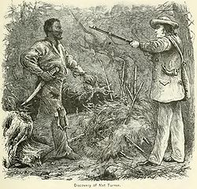

Nat Turner's Revolt
Before the Revolt
- In February 1831, Nat Turner saw a solar eclipse. He took this solar eclipse as a sign from God, telling him that it was time to plan a revolt.
- The revolt was originally scheduled for July 4, 1831, but it was rescheduled because Turner was sick on that day.
- Nat planned the revolt for August 21, 1831, having seen another solar eclipse a week earlier.
The Revolt of 1831
- On the night of August 21, Nat and his supporter Hark Travis climbed into Joseph Travis' house in Southampton County by ladder. They aimed to make as little noise as possible, to prevent any excitement from spreading through the town. Turner made the first strike on Joseph and he and Hark went on to kill Joseph's five remaining family members. They were all killed in their bedrooms, some not even fully awake. One was an infant in a cradle.
- Nat and Hark took four guns, some muskets, at least one pound of gunpowder, and some horses from Travis' plantation, to assist in the remainder of the revolt.
- More rebels joined the insurrection as their owners were killed by Nat Turner and his supporters.
- On Monday, August 22, the revolt was met by some militia. The militia stopped the rebels from getting into Jerusalem, Virginia. The last house that they raided was that of Dr. Simon Blunt. Many of Blunt's slaves helped fight against the rebels.
Newsaper drawing of Nat Turner's 1831 Revolt
After The Revolt
- After the revolt ended, Nat Turner hid in the woods near where the killings had occurred. He avoided being captured until October 31, when he was caught by Benjamin Phipps. 
- Thomas Gray began writing The Confessions of Nat Turner based on Nat Turner's responses to questions about his life and the revolt. Nat Turner was sentenced to hanging for his insurrection on November 5th, and he was executed on November 11, 1831, along with 16 of his supporters.
Nat Turner caught by Benjamin Phipps
Nat Turner's Confessions